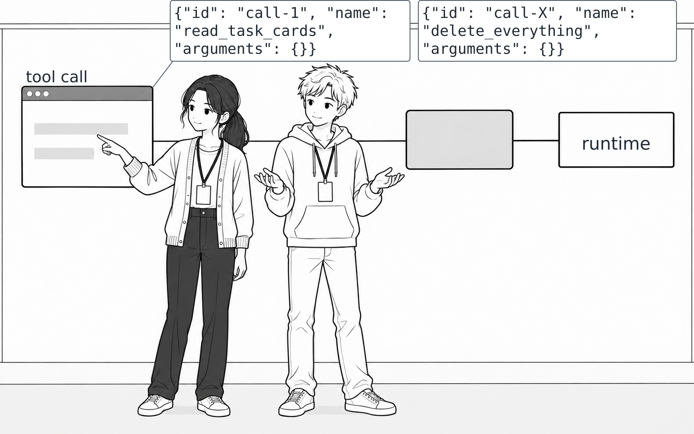
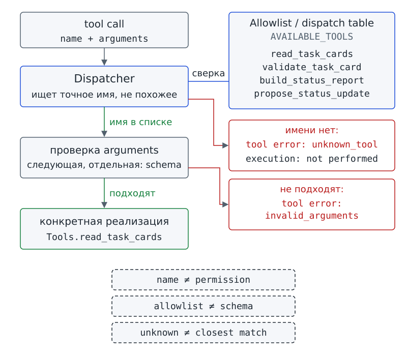
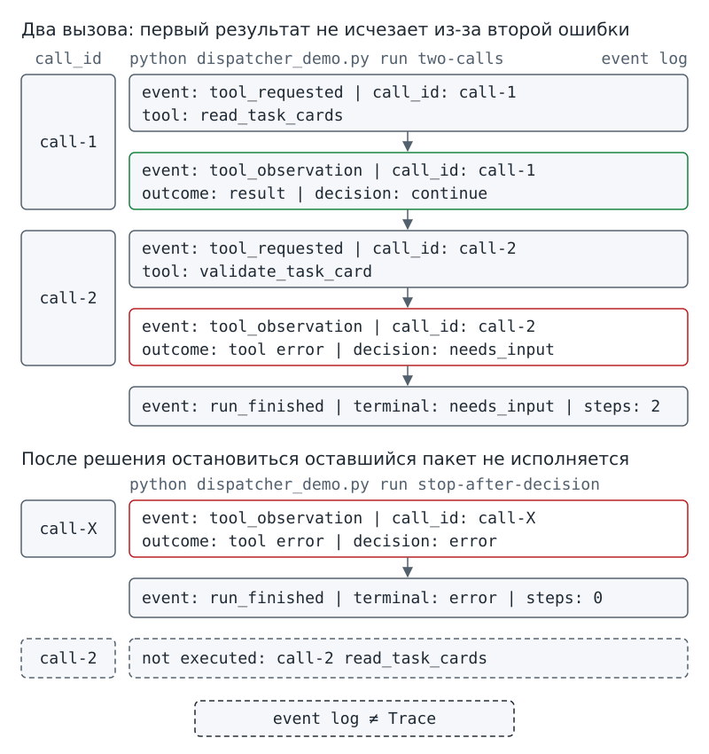

Глава 7. Диспетчер и ошибки¶
С чего всё началось¶
До Фестиваля науки остаётся несколько дней. На доске проектного бюро прибавляются карточки. Программа «Дежурный» уже получает структурированные запросы на tool (инструмент) и проверяет arguments (аргументы), а разрешённую операцию выполняет приложение. Аня запускает очередную учебную проверку и показывает Марку два tool calls — запроса на вызов инструмента — одинаковой формы.
{"id": "call-1", "name": "read_task_cards", "arguments": {}}
{"id": "call-X", "name": "delete_everything", "arguments": {}}
Марк смотрит на вторую строку и пожимает плечами:
— Раз поле называется name, приложение просто найдёт функцию с таким именем и вызовет её. Иначе зачем вообще передавать имя?
Аня открывает архитектурную схему из главы 3. Между проверками приложения и runtime — средой выполнения — на схеме оставлено место для выбора: какое имя разрешено связать с реальной функцией? Но Аня пока не рисует механизм выбора и не сообщает, что произойдёт со второй строкой.
На вид оба запроса устроены одинаково: каждый содержит id, name и arguments. В главе 6 мы отличали tool call от выполненного действия на примерах с заранее известными именами. Теперь в запросе появилось незнакомое имя. Одной формы запроса уже недостаточно, чтобы объяснить, что сделает приложение.
Вопрос-Прогноз. Если поле
nameсодержит строку, похожую на имя функции, достаточно ли этого, чтобы приложение выполнило её? Что должно произойти до runtime и какое наблюдение докажет, что неизвестное имя не исполнялось?
Запиши прогноз в двух строках. В первой строке назови условие, при котором имя можно передать дальше. Во второй строке укажи признак, по которому ты отличишь отказ до выполнения от уже выполненной попытки. К этим двум строкам мы вернёмся после практики урока 14.
Главный вопрос главы. Как безопасно связать имя tool с разрешённой функцией?

Фигура 18. Имя есть, разрешения ещё нет
После главы ты сможешь¶
- показывать место программного слоя, который связывает разрешённое имя tool с конкретной реализацией, и читать явную таблицу разрешённых имён как техническую границу доступных операций;
- объяснять, почему строка, похожая на имя функции, не даёт права искать и выполнять произвольный код;
- отличать отказ до выполнения от ошибки уже начатой операции;
- объяснять, почему неуспешный исход одного вызова не равен терминалу
errorвсего запуска; - связывать result или ошибку с исходным
idи читать порядок наблюдаемых событий; - объяснять, почему после терминального решения оставшиеся tool calls пакета не должны выполняться;
- сохранять проверяемое свидетельство одного сеанса с ручным переносом ответа живой модели, не выдавая один запуск за общую оценку её поведения.
Урок 13. Диспетчер и белый список¶
Вопрос урока. Как связать имя tool с разрешённой функцией и не выполнять произвольный код?
1. Какое звено отсутствовало в карте главы 6¶
В конце главы 6 мы проследили такую цепочку:
- Модель формирует tool call.
- Приложение получает
nameиarguments. - Приложение проверяет arguments.
- Приложение вызывает функцию.
- Функция возвращает tool result — результат вызова.
Для разобранных примеров цепочка верна: мы заранее выбирали знакомые имена операций. Но откуда приложение знает, с какой именно функцией разрешено связать строку name?
На первый взгляд мысль Марка кажется убедительной: read_task_cards и delete_everything выглядят как имена действий. Первое имя уже знакомо по проекту, второе тоже записано обычной строкой. Однако сходство записи ничего не разрешает. Если программа начнёт искать функцию по любой входной строке, модель получит возможность указывать исполняемый код. Наш договор задачи такой возможности модели не давал.
Между чтением имени и runtime нужен программный слой, который сравнивает строку с заранее известными разрешёнными именами. Только точное совпадение позволяет выбрать конкретную реализацию. Поиск «чего-нибудь похожего» здесь не подходит.
Dispatcher / диспетчер — программный слой, который сопоставляет разрешённое имя tool с конкретной реализацией.
Dispatcher проверяет, есть ли для полученного имени точное разрешённое соответствие. При совпадении работа может перейти к следующей проверке. Без совпадения приложение отклоняет имя, не вызывая функцию.
Dispatcher не выбирает цель задачи и не проверяет истинность данных. Успех разрешённой операции Dispatcher тоже не гарантирует. Dispatcher — обычный программный код, а не модель. Он также не заменяет OS-sandbox — изоляцию средствами операционной системы. Задача Dispatcher уже: связать разрешённое имя с заранее заданной реализацией и отклонить неизвестное имя.
Работу Dispatcher можно сравнить со стойкой выдачи ключей из нумерованных ячеек. Номер ячейки соответствует имени tool, а лежащий в ячейке ключ соответствует реализации. Сотрудник выдаёт ключ только из существующей ячейки, а не ищет по зданию «дверь с похожим названием». Сходство ограничено выбором по точному обозначению: Dispatcher не человек и не физический замок, правило задаёт код программы.

Фигура 19. Dispatcher: точное имя → разрешённая реализация
2. Список, который существует до запроса¶
Разрешённые имена должны быть известны ещё до получения запроса. Иначе Dispatcher будет не проверять строку, а принимать новые правила от самой модели. Список не дополняется ни из-за уверенного ответа модели, ни из-за сходства нового имени с разрешённым.
Allowlist / белый список — заранее определённый перечень разрешённых действий, имён или ресурсов.
Allowlist в этой главе относится к именам tools. Приложение заранее знает набор имён, для которых предусмотрены реализации. Входная строка либо точно совпадает с одним из разрешённых имён, либо отклоняется.
Allowlist не проверяет arguments и не выдаёт приложению новые системные права. Наличие имени в списке также не делает сам tool безопасным во всех отношениях. Запрос с разрешённым именем ещё должен пройти остальные проверки. Неизвестное имя отклоняется до runtime, без поиска «ближайшей» функции.
Представим, что школьная лаборатория принимает заявки на выдачу приборов. Выдача прибора разрешена, но в заявке не указан нужный прибор. Здесь приходится отдельно проверить вид действия и сведения для действия. Так же allowlist проверяет имя операции, а проверка arguments проверяет данные запроса. Сравнение касается только разделения проверок.
3. Где видно соответствие «имя → реализация»¶
В starter разрешённые имена и соответствующие функции записаны попарно. Для такой записи используется словарь Python — структура данных, в которой ключ связан со значением. Здесь ключом служит имя tool, а значением служит конкретная функция. Функции операций проекта объединены в классе Tools. Чтобы прочитать таблицу, достаточно различать две стороны записи: слева от двоеточия стоит имя в кавычках, справа указана функция из Tools.
Dispatch table / таблица соответствий — явное соответствие каждого разрешённого имени tool одной конкретной реализации; в starter — словарь AVAILABLE_TOOLS.
Dispatch table позволяет увидеть, какие операции доступны Dispatcher. В таблице ниже четырём разрешённым именам соответствуют четыре конкретные реализации. Таблица не создаёт второй Dispatcher и не вводит другой способ выполнения функций. Приложение выбирает функцию по записанному соответствию, а не ищет любые функции программы по входной строке и не исполняет текст как код.
Проверь себя на ходу. В allowlist есть только
read_task_cards, а запрос содержитread_task_card. Следует ли Dispatcher «догадаться», что пропущена букваs, и вызвать ближайшее имя? Какой принцип главы нарушило бы такое исправление?
4. Читаем настоящий Dispatcher¶
Ниже приведён полный файл school_agent/dispatcher.py из starter. Переменная call_id хранит знакомый по главе 6 id конкретного запроса. В части try программа пробует выполнить операцию; ветви except обрабатывают предусмотренные ошибки выполнения.
Прочитай листинг и найди четыре места:
- Найди dispatch table с разрешёнными именами.
- Найди проверку неизвестного имени.
- Найди проверку arguments до вызова.
- Найди ветви, которые превращают ошибку выполнения в структурированный результат.
# файл: school_agent/dispatcher.py
"""Только четыре доменных tools; никакого выполнения имени как кода."""
from .tools import Tools, ToolDataError
from .paths import WorkspaceBoundaryError
from .validation import validate_tool_arguments
AVAILABLE_TOOLS = {
"read_task_cards": Tools.read_task_cards,
"validate_task_card": Tools.validate_task_card,
"build_status_report": Tools.build_status_report,
"propose_status_update": Tools.propose_status_update,
}
def call_tool(tool_call, tools):
name = tool_call.get("name") if isinstance(tool_call, dict) else None
call_id = tool_call.get("id", "unknown") if isinstance(tool_call, dict) else "unknown"
result = {"call_id": call_id, "name": name, "ok": False, "executed": False}
if not isinstance(name, str) or name not in AVAILABLE_TOOLS:
result["error"] = {"code": "unknown_tool", "message": "имя отсутствует в allowlist"}
return result
errors = validate_tool_arguments(name, tool_call.get("arguments"))
if errors:
result["error"] = {"code": "invalid_arguments", "message": "; ".join(errors)}
return result
result["executed"] = True
try:
value = AVAILABLE_TOOLS[name](tools, **tool_call["arguments"])
result.update(ok=True, result=value)
except WorkspaceBoundaryError:
result["error"] = {"code": "outside_workspace", "message": "доступ вне workspace запрещён"}
except ToolDataError as exc:
result["error"] = {"code": exc.code, "message": str(exc)}
except (OSError, ValueError, TypeError):
result["error"] = {"code": "tool_error", "message": "операция с учебными данными не выполнена"}
return result
Таблица AVAILABLE_TOOLS связывает четыре разрешённых имени с четырьмя реализациями. Функция call_tool сначала извлекает name и id, не запуская инструмент. Если имя неизвестно, call_tool возвращает ошибку unknown_tool при executed: False: выполнение не началось.
После успешной проверки имени программа проверяет arguments по правилам схемы. Разрешённое имя не исправляет неверные arguments: при ошибке данных результат снова возвращается с executed: False. Только после обеих проверок программа ставит executed = True и переходит в try, где вызывает функцию из AVAILABLE_TOOLS.
Allowlist отвечает на вопрос «разрешено ли такое имя?», а проверка arguments отвечает на вопрос «подходят ли данные конкретного вызова?». Проверки идут последовательно и не заменяют друг друга.
5. Три похожих запроса — три разных исхода¶
В трёх случаях ниже только один запрос даст обычный result. Два других будут отклонены: один из-за неизвестного имени, другой из-за неверных arguments. Что должно вернуть приложение, если функция даже не запускалась? Нужен структурированный исход, по которому можно установить причину отказа.
Tool error / ошибка tool — структурированный результат неуспешного вызова: отклонение до выполнения (неизвестное имя, неверные arguments) или ошибка во время выполнения; не равен терминалу error всего запуска.
Tool error описывает неуспешный исход одного tool call. Такой исход возможен даже при execution: not performed, когда функция не запускалась. В уроке 14 мы разберём и другой случай: разрешённая функция начала выполняться, но завершилась ошибкой.
По одному tool error нельзя установить, завершён ли весь запуск. Агентный цикл, или agent loop, принимает отдельное решение после observation — наблюдения, полученного от операции или проверки.
Начнём с разрешённого запроса. Команда case allowed передаёт один подготовленный tool call в функцию call_tool из напечатанного листинга.
# запуск из корня starter
python dispatcher_demo.py case allowed
call_id: call-1
tool: read_task_cards
allowlist: allowed
arguments: valid
execution: performed
outcome: result
Строка execution: performed показывает, что приложение дошло до вызова реализации. Перед вызовом точное имя прошло allowlist, а arguments прошли проверку данных. Строка outcome: result сообщает отдельно, что в этом случае операция вернула обычный результат.
Теперь проверим неизвестное имя из вводной сцены.
# запуск из корня starter
python dispatcher_demo.py case unknown-tool
call_id: call-X
tool: delete_everything
allowlist: denied
arguments: not checked
execution: not performed
outcome: tool error
error: имя отсутствует в allowlist
Для неизвестного имени программа печатает allowlist: denied и execution: not performed: запрос отклонён, выполнение не начиналось. Строка arguments: not checked показывает, что программа не переходила даже к проверке arguments. Именно отказ до выполнения нам нужен для ответа на вопрос-прогноз.
Третий запрос остановится на другой проверке. Имя validate_task_card разрешено, но в arguments отсутствует обязательное поле task_id.
# запуск из корня starter
python dispatcher_demo.py case invalid-arguments
call_id: call-2
tool: validate_task_card
allowlist: allowed
arguments: invalid
execution: not performed
outcome: tool error
error: arguments: нет обязательного поля task_id
Имя прошло allowlist, однако проверка arguments остановила запрос до выполнения. Запись allowlist ≠ schema означает, что список разрешённых имён не заменяет схему данных. Запись allowed name ≠ guaranteed success напоминает: разрешённое имя не гарантирует успеха операции.
6. Почему нельзя выполнять входную строку как код¶
Можно написать программу, которая пытается выполнить полученную строку name как код, например передаёт строку Python-функции eval. Другой вариант — искать функцию с указанным названием во всём модуле или подбирать ближайшее имя по сходству. Для учебного «Дежурного» такие изменения разрушили бы границу Dispatcher: программа стала бы выбирать код не только по заранее записанным соответствиям.
В нашем starter строка запроса сравнивается только с ключами AVAILABLE_TOOLS. Приложение не превращает неизвестное имя в команду для shell (командной оболочки) и не подключает по входной строке программный модуль. Разрешённый набор остаётся явным: ты можешь проверить список имён по коду.
Явный список имён ещё не доказывает полной безопасности программы. Allowlist ограничивает только один слой — связь имени tool с предусмотренной реализацией. Поведение разрешённой функции и доступ функции к файлам проверяются другими механизмами. Отдельно действуют permissions из главы 3 — технически заданные права на чтение, запись, сеть, процессы или другие ресурсы.
7. Практика A: стойка Dispatcher¶
Объединись с одноклассниками в группу из трёх–четырёх человек. Договорись с группой, кто выполняет каждую роль:
- Один ученик играет Dispatcher.
- Второй ученик проверяет arguments.
- Третий ученик играет runtime.
- Если вас четверо, четвёртый ученик ведёт журнал наблюдений.
Положи на стол карточки tool calls с полями id, name, arguments и отдельные карточки четырёх разрешённых имён проекта.
Dispatcher передаёт карточку дальше только при точном совпадении имени. Проверь с группой три маршрута:
- Передай карточку с
delete_everythingв областьtool error. До станции arguments карточка не доходит. - Передай карточку
validate_task_cardс пустыми{}через Dispatcher. На станции проверки arguments карточка останавливается. - Передай карточку
read_task_cardsс{}через обе проверки. Только после проверок карточка доходит до runtime.
Не оценивай, «разумно» ли выглядит имя. Следи за маршрутом карточки: какая проверка сработала и начиналось ли выполнение. Если кто-то предлагает исправить неизвестное имя «по смыслу», запиши предложение как найденную ошибку проектирования.
Результат практики A: таблица из трёх случаев allowed / unknown / invalid arguments с тремя колонками:
- «имя прошло allowlist?»
- «arguments проверены?»
- «выполнение началось?»
Последняя колонка заполняется только фактом, а не предположением.
8. Практика B: найди границы в коде и сверь их с выводом¶
Вернись к листингу school_agent/dispatcher.py и отметь четыре строки или блока:
- Отметь
AVAILABLE_TOOLS. - Отметь условие
name not in AVAILABLE_TOOLS. - Отметь вызов
validate_tool_arguments(...). - Отметь строку, где
executedстановитсяTrue.
Сопоставь каждую пометку с тремя уже выполненными сценариями case.
По пометкам восстанови один маршрут: точное имя → проверка arguments → фактический вызов. Если вывод сообщает execution: not performed, найди в коде ветвь, которая вернула результат раньше строки executed = True.
Результат практики B: листинг с четырьмя пометками на полях и короткое объяснение каждого из трёх сценариев по формуле «какая граница остановила или пропустила запрос → началось ли выполнение».
9. Мини-проверка урока 13¶
- Что делает Dispatcher?
- Что хранит allowlist в этой главе?
- Почему неизвестное имя не должно доходить до runtime?
- Чем allowlist отличается от проверки arguments?
- Почему «поиск похожего имени» ломает смысл Dispatcher?
Ответы¶
- Сопоставляет разрешённое имя tool с конкретной реализацией и отклоняет неизвестное имя.
- Заранее заданный набор разрешённых имён tools.
- Потому что входная строка сама не является разрешением на выполнение функции.
- Allowlist проверяет допустимость имени, а следующая проверка — данные конкретного вызова.
- Потому что тогда неизвестная строка могла бы превратиться в другую операцию без точного заранее заданного соответствия.
Выходной билет урока 13¶
Восстанови цепочку урока. Между name и runtime нужно вписать три звена. Заполни пропуски без подглядывания:
name → … → … → … → runtime
Рядом допиши правые части двух записей о границах:
unknown name ≠ …
allowed name ≠ …
Если в первой строке у тебя есть стрелка от неизвестного имени прямо к runtime, вернись к выводу case unknown-tool: программа показывает execution: not performed.
Урок 14. Ошибки, несколько вызовов и возврат результата¶
Вопрос урока. Как агент продолжает работу после ошибки или нескольких tool calls?
1. Разрешённое имя тоже может закончиться ошибкой¶
В уроке 13 оба отказа произошли до выполнения. Неизвестное имя не прошло allowlist, а запрос с разрешённым именем остановился на неверных arguments. Теперь рассмотрим третий случай: имя разрешено, данные корректны, runtime начинает выполнять функцию, но операция не может завершиться обычным результатом.
Например, read_task_cards может начать чтение и обнаружить, что учебные карточки недоступны. Запись execution: not performed уже не соответствует случившемуся: попытка началась. Программе нужно сообщить об ошибке. Если программа аварийно остановится или скроет сбой в пустой ветви except, следующий шаг не сможет понять причину неудачи.
Exception / исключение — программная ошибка, возникшая во время уже начатого выполнения функции; приложение перехватывает её и превращает в наблюдаемый результат, а не в аварийную остановку.
Exception возникает во время уже начатого выполнения функции. При неизвестном имени или неверных arguments функция ещё не запускалась. В нашем dispatcher.py предусмотренные ошибки выполнения обрабатываются ветвями except: приложение возвращает структурированный объект с ok: False и описанием ошибки.
После exception весь запуск не обязательно завершается терминалом error. Решение принимает агентный цикл после observation. В зависимости от принятой политики система может:
- Повторить попытку.
- Запросить недостающие данные.
- Завершить запуск.
2. Один формат для разных неуспешных вызовов¶
Обычный result может не появиться по трём причинам:
- Имя операции неизвестно.
- Arguments не соответствуют требованиям.
- Во время выполнения возникло exception.
В уроке 13 мы назвали структурированный исход неуспешного вызова tool error. Такой исход объединяет отказ до выполнения и ошибку уже начатой функции, но не делает эти случаи одинаковыми.
Tool error описывает один вызов. Терминал error сообщает об итоге всего запуска. Поэтому строка outcome: tool error сама по себе не означает, что работа закончена. Чтобы установить итог, нужно прочитать решение после observation.
Вместе с ошибкой должно быть видно и то, запускалась ли функция. Поэтому демонстрация отдельно печатает execution: performed или execution: not performed. Сообщение tool error не заменяет отметку о выполнении.
В следующем сценарии первый вызов read_task_cards начинается и завершается ошибкой. Второй вызов read_task_cards затем проходит успешно.
# запуск из корня starter
python dispatcher_demo.py case tool-exception
call_id: call-3
tool: read_task_cards
allowlist: allowed
arguments: valid
execution: performed
outcome: tool error
error: Ошибка: учебные карточки недоступны
call_id: call-4
tool: read_task_cards
allowlist: allowed
arguments: valid
execution: performed
outcome: result
Сравни вывод с case unknown-tool. В обоих случаях есть outcome: tool error. Но для неизвестного имени указано execution: not performed, а для ошибки начатой операции указано execution: performed. По одному слову error различить эти случаи нельзя.
Проверь себя на ходу. В двух выводах есть
tool error. В первомexecution: not performed, во второмexecution: performed. Как по этим двум строкам восстановить, где примерно произошёл сбой: до runtime или уже во время выполнения?
3. Не терять порядок и связь с id¶
Модель может вернуть несколько tool calls в одном ответе. Тогда нужно сохранить не только исходы, но и порядок событий, а каждый result или tool error связать с исходным запросом.
Допустим, две группы бюро попросили прочитать карточки. Первый вызов read_task_cards вернул данные. К моменту второго вызова карточки оказались недоступны, и операция завершилась ошибкой. Имя операции одно, а исходы различаются. Разные id позволяют указать, какой запрос получил каждый результат.
Event log / журнал событий — последовательный список наблюдаемых событий запуска: запрос tool, результат или ошибка, решение; каждый результат связан с id своего вызова.
Event log сохраняет порядок наблюдаемых событий. Сначала записывается запрос call-1, затем его observation и решение. Следующий запрос обрабатывается только при продолжении работы. Знакомое по главе 6 поле id связывает результат с конкретным tool call, даже если несколько запросов содержат одинаковое имя операции.
Event log главы 7 содержит наблюдаемые события, а не скрытые рассуждения модели. Такой журнал не следует отождествлять с формальной моделью Trace и диагностикой по ней из будущей главы 12.
В командах bridge — ручного переноса ответа живой модели между доступным чатом и harness — встретятся флаг --trace и папка workspace/traces/. Здесь trace используется как служебное имя для записи журнала событий, без введения формальной модели Trace.
4. Два вызова: первый результат не исчезает из-за второй ошибки¶
В сценарии two-calls один ответ содержит два tool calls: сначала чтение карточек, затем проверку карточки с несуществующим task_id. Режим replay здесь воспроизводит заранее подготовленный авторский вход с меткой synthetic_script. Живая модель в этом сценарии не участвует.
# запуск из корня starter
python dispatcher_demo.py run two-calls
mode: replay
origin: synthetic_script — авторский сценарий, не запись модели
event: tool_requested | call_id: call-1 | tool: read_task_cards
event: tool_observation | call_id: call-1 | tool: read_task_cards | execution: performed | outcome: result | decision: continue
event: tool_requested | call_id: call-2 | tool: validate_task_card
event: tool_observation | call_id: call-2 | tool: validate_task_card | execution: performed | outcome: tool error | decision: needs_input | error: нет карточки с указанным id
event: run_finished | terminal: needs_input | steps: 2
Первый вызов call-1 выполняется и даёт result. Решение continue позволяет обработать следующий запрос. Вызов call-2 тоже выполняется, но заканчивается tool error: карточки с указанным task_id нет. После observation вызова call-2 принимается решение needs_input.
После ошибки второго вызова легко описать весь запуск одним словом: «неудача». Но такое описание потеряет результат первого вызова. В event log у каждого исхода сохранён свой call_id, поэтому видно, что чтение удалось, а проверка карточки дала ошибку. Запуск завершился терминалом needs_input, не error.
5. После решения остановиться оставшийся пакет не исполняется¶
Вернёмся к сцене с delete_everything и добавим второй вызов в пакет. Первым идёт неизвестное имя с id call-X, за ним идёт разрешённый read_task_cards с id call-2. Достаточно ли разрешённого имени, чтобы второй вызов состоялся? Нет: после первого observation приложение может принять терминальное решение и прекратить обработку пакета.
# запуск из корня starter
python dispatcher_demo.py run stop-after-decision
mode: replay
origin: synthetic_script — авторский сценарий, не запись модели
event: tool_requested | call_id: call-X | tool: delete_everything
event: tool_observation | call_id: call-X | tool: delete_everything | execution: not performed | outcome: tool error | decision: error | error: имя отсутствует в allowlist
event: run_finished | terminal: error | steps: 0
not executed: call-2 read_task_cards
В пакете было два запроса, но ни один не привёл к выполненной попытке. Вывод позволяет проверить причину для каждого запроса:
- У неизвестного имени напечатано
execution: not performed: выполнение первого вызова не началось. - Счётчик
stepsравен нулю: отклонённый до выполнения запрос не считается выполненной попыткой. - Строка
not executed: call-2 read_task_cardsпоказывает, что второй вызов не исполнялся после терминального решения.
В этом сценарии действует инвариант главы 2: решение принимается после observation. При терминальном решении новый шаг не начинается. Второй запрос в том же ответе модели не обязывает harness продолжать работу после решения остановиться.
6. Где это видно в run_agent¶
Порядок обработки пакета уже задан в starter. Ниже приведён фрагмент school_agent/agent.py: от обработки очередного request (запроса) до команды break, которая прекращает перебор после терминального решения.
# фрагмент: school_agent/agent.py
for request in response["tool_calls"]:
trace.record("tool_requested", initiator="model", request=request)
if request["id"] in call_ids:
terminal, reason = "error", "duplicate_call_id"
trace.record("tool_rejected", code=reason)
state["done"] = True
break
call_ids.add(request["id"])
observation = call_tool(request, tools)
if observation["executed"]:
state["steps"] += 1
executed.append(request["name"])
if not observation["ok"]:
state["failures"] += 1
state["phase"] = "tool_error"
elif request["name"] == "read_task_cards":
state["phase"] = "cards_read"
elif request["name"] == "validate_task_card":
state["phase"] = "cards_validated" if tools.cards and len(tools.validated) == len(tools.cards) else "validating"
elif request["name"] == "build_status_report":
state["phase"] = "report_built"
report = observation["result"]["report"]
else:
state["phase"] = "proposal_ready"
observations.append(observation)
decision = decide_after_observation(observation, state, max_steps, max_retries)
trace.record("tool_observation", step=state["steps"], observation=observation,
state=copy.deepcopy(state), decision=decision)
if decision != "continue":
terminal, reason = decision, "after_observation"
state["done"] = True
break
Найди два условия, которые объясняют вывод предыдущего сценария. Запись if observation["executed"]: state["steps"] += 1 означает, что счётчик увеличивается только для выполненной попытки. Запись if decision != "continue": ... break показывает остановку перебора: если решение отличается от continue, программа больше не обрабатывает запросы этого пакета.
Функция run_agent не повторяет код Dispatcher: каждый request передаётся в существующий call_tool. Поэтому правило allowlist и проверка arguments остаются в одном месте, а не расходятся по нескольким похожим реализациям.
Проверь себя на ходу. В пакете три tool calls. После observation первого вызова
decisionсталerror. Какие из двух оставшихся вызовов должны увеличитьstepsи какие событияtool_observationдолжны появиться для них?
7. Повтор после ошибки: решение видно отдельно от сообщения¶
В сценарии missing-file разрешённый read_task_cards запускается два раза и оба раза встречает недоступные карточки. Сообщение об ошибке одинаково, но решения различаются: после первой попытки агентный цикл разрешает continue, после второй завершает запуск терминалом error.
# запуск из корня starter
python dispatcher_demo.py run missing-file
mode: replay
origin: synthetic_script — авторский сценарий, не запись модели
event: tool_requested | call_id: call-1 | tool: read_task_cards
event: tool_observation | call_id: call-1 | tool: read_task_cards | execution: performed | outcome: tool error | decision: continue | error: Ошибка: учебные карточки недоступны
event: tool_requested | call_id: call-2 | tool: read_task_cards
event: tool_observation | call_id: call-2 | tool: read_task_cards | execution: performed | outcome: tool error | decision: error | error: Ошибка: учебные карточки недоступны
event: run_finished | terminal: error | steps: 2
Команда dispatcher_demo.py run missing-file показывает текст ошибки внутри события tool_observation. Знакомая команда agent_demo.py выводит более короткую запись того же учебного сценария, без отдельной строки с сообщением об ошибке.
# запуск из корня starter
python agent_demo.py --scenario missing_file
Режим: replay
Шаг 1 | read_task_cards | continue
Шаг 2 | read_task_cards | error
Остановка: error
Качество модели не подтверждено этим техническим прогоном.
Оба вывода показывают две выполненные попытки: после первой принято решение continue, после второй запуск завершён терминалом error. Успешного результата нет, но счётчик попыток всё равно равен двум, потому что обе операции начинали выполняться. Команда dispatcher_demo.py run missing-file дополнительно показывает call_id, факт выполнения и текст tool error для каждого вызова.
8. Практика A: события по call_id¶
Работай в паре или тройке. Подготовь два бумажных tool calls с разными id. Рядом положи карточки result, tool error, continue, needs_input, error и обозначь область not executed. Выкладывай события слева направо в порядке event log.
В первом раунде свяжи call-1 с result и continue, а call-2 свяжи с tool error и needs_input. Во втором раунде первым поставь call с неизвестным именем, после которого принято решение error. Второй call оставь в области not executed. Продолжать обработку пакета «для полноты» нельзя: продолжение нарушит правило остановки.
Результат практики A: бумажный event log с call_id на каждом result/error и одна фраза о том, почему ошибка второго вызова не стирает результат первого.
9. Практика B: прочитай фрагмент, затем проверь три сценария¶
В фрагменте agent.py отметь четыре места:
- Найди вызов
call_tool. - Найди увеличение
steps. - Найди вызов
decide_after_observation. - Найди
breakпосле терминального решения.
Затем запусти уже приведённые команды или разбери их напечатанные выводы:
- Проверь
run two-calls. - Проверь
run stop-after-decision. - Проверь
run missing-file.
Для каждого сценария запиши три наблюдения:
- Укажи, сколько попыток действительно выполнено.
- Укажи, какой terminal напечатан.
- Укажи, остались ли неисполненные calls.
Не выводи ответ из названия сценария. Используй только строки event log и run_finished.
Результат практики B: таблица трёх прогонов со ссылкой на строку листинга, которая объясняет каждый итог. Колонки таблицы:
executed attempts— выполненные попытки;terminal— итог запуска;remaining calls— оставшиеся запросы.

Фигура 20. Два calls, два результата, один порядок событий
10. Bridge: тот же контракт на одном реальном ответе¶
Локальные сценарии детерминированы: программа воспроизводит авторский replay, а не поведение живой модели. Что изменится, если ответ действительно составит модель? Проверки harness останутся прежними, но сам ответ придётся получить и сохранить.
После локальных проверок можно провести один реальный bridge-сеанс. Сохранённые материалы покажут, как ответ доступной модели прошёл через harness. Сеанс не заменяет локальные golden — эталонные результаты проверок — и не даёт общей оценки качества модели.
Для bridge в этой главе используй только сценарий success. В записи --adapter bridge слово adapter (адаптер) означает выбранный способ получить ответ модели. Здесь ответ переносится вручную.
Флаг --trace задаёт запись журнала событий в файл; формальное понятие Trace появится позже. Для каждого запуска выбери новое имя файла внутри workspace/traces/, например с названием группы.
python agent_demo.py --adapter bridge --scenario success --trace traces/bridge-lesson14-group-a.jsonl
Для команды bridge не дан заранее напечатанный stdout: результат зависит от фактического сеанса. Для защиты работы сохрани пять материалов:
- Сохрани обезличенный контекст.
- Сохрани сырой ответ модели в пределах правил приватности.
- Сохрани результат проверки ответа.
- Сохрани созданный файл журнала событий.
- Заполни паспорт сеанса по шаблону
workspace/ch07/bridge_passport_template.md.
В паспорте укажи дату, адаптер и сценарий. Добавь название модели или сервиса, если название известно, и наблюдаемый исход. Сохрани пометку «один сеанс — не eval»: один запуск нельзя превращать в общую оценку качества модели. Само понятие eval будет введено позже, в главе 11.
Если bridge-сеанс не укладывается в отведённые 15 минут, закончи лабораторную работу. Домашний доступ к сервису не становится обязательным. Не заменяй несостоявшийся или неудачный запуск придуманной «удачной записью». Исход error или needs_input можно разобрать как фактическое наблюдение. Если время позволяет, выполни исправленный прогон и запиши журнал в файл с новым именем.
11. Мини-проверка урока 14¶
- Чем exception отличается от отказа
unknown_tool? - Почему tool error не равен терминалу
error? - Для чего нужен
call_idпри нескольких вызовах? - Что должен содержать минимальный event log этой главы?
- Что произойдёт с оставшимися calls пакета после терминального решения?
- Почему event log главы 7 ещё не является формальным Trace?
Ответы¶
- При exception выполнение функции уже началось; при
unknown_toolоно не начиналось. - Tool error описывает исход одного вызова, а terminal — итог всего запуска после решения agent loop.
- Чтобы однозначно связать result или error с исходным tool call.
- Последовательность наблюдаемых запросов, результатов или ошибок и решений, с привязкой к
id. - Они не выполняются.
- Здесь используется минимальная последовательность событий; формальная модель Trace отложена до главы 12.
Выходной билет урока 14¶
Дополни четыре строки:
неизвестное имя → …
invalid arguments → …
exception во время tool → …
terminal decision → оставшиеся calls …
Проверь факт выполнения в каждой строке. В первых двух строках execution должно быть not performed, а в третьей строке должно быть performed. Если ты указал одинаковый факт выполнения для всех трёх случаев, вернись к четырём case-сценариям.
Домашняя работа¶
По желанию выдели 15–20 минут и разбери уже выполненный bridge-сеанс по сохранённым материалам. Не запускай новый сервис только ради домашней работы. Выпиши три факта:
- Укажи, какой tool call пришёл.
- Укажи, какое наблюдение вернулось.
- Укажи, какой исход зафиксирован в паспорте.
Отдельно напиши, чего один этот сеанс не доказывает.
Центральная схема главы¶
Соединим обе части главы в один маршрут. Пройди по схеме от строки name до решения agent loop. На каждой развилке установи, началось ли выполнение.
ответ модели / replay / bridge
↓
tool call
id + name + arguments
↓
Dispatcher
↓
Allowlist
┌──────┴─────────┐
unknown allowed
↓ ↓
tool error schema arguments
(no execution) ┌───┴─────┐
invalid valid
↓ ↓
tool error runtime
(no execution) ↓
tool executes
┌──────┴──────┐
result exception
↓ ↓
event/result tool error/event
└──────┬───────┘
↓
observation
↓
decision
↓
continue / terminal
Сопоставь маршрут с пятью записями о границах:
name ≠ permission
allowlist ≠ schema
schema valid ≠ execution success
tool error ≠ terminal error
event log ≠ Trace
- Граница
name ≠ permissionотвечает Марку из вводной сцены: имя в запросе само по себе не даёт разрешения на выполнение. - Граница
allowlist ≠ schemaразделяет проверку имени и проверку данных. - Граница
schema valid ≠ execution successнапоминает, что даже при корректном запросе во время выполнения может возникнуть exception. - Граница
tool error ≠ terminal errorразделяет неуспешный вызов и итог всего запуска. - Граница
event log ≠ Traceотличает используемый здесь журнал событий от формального понятия главы 12.
Схема связывает главы 6 и 7, сохраняя смысл уже введённых понятий.
Обязательные проверки: должен / не должен / ошибка / граница¶
Должен. В сценарии case allowed разрешённое имя read_task_cards с корректными {} должно пройти allowlist и проверку arguments. Для этого сценария вывод показывает execution: performed и outcome: result.
Не должен. Неизвестное имя delete_everything не должно запускать никакую реализацию или превращаться в «похожее» разрешённое имя. Отказ виден по строкам allowlist: denied и execution: not performed.
Ошибка. Разрешённый вызов может начаться и закончиться tool error. В сценарии case tool-exception напечатаны execution: performed и outcome: tool error. Сообщение не содержит служебного отчёта Python Traceback или абсолютного системного пути.
Граница. После терминального решения следующий call того же пакета не выполняется. В сценарии stop-after-decision строка steps: 0 показывает отсутствие выполненных попыток. Отдельная строка not executed: call-2 read_task_cards подтверждает, что второй запрос не был исполнен.
Безопасность¶
Безопасность
Allowlist задаёт техническую границу, но не доказывает полную безопасность. Список определяет только то, какое имя разрешено связать с предусмотренной реализацией. Наличие имени в списке не подтверждает безошибочность реализации или правдивость данных и не означает, что операционная система изолировала последствия выполнения.
Приложение не исполняет неизвестное имя как код, не передаёт имя в shell (командную оболочку) и не подбирает замену «по похожести». Arguments проверяются отдельно до вызова. Предусмотренные ошибки разрешённой операции возвращаются как структурированный tool error. Сообщение об ошибке не должно раскрывать системные пути и секреты.
В сквозном проекте предложение изменить статус карточки остаётся только предложением. Наличие
propose_status_updateв dispatch table не означает, что приложение автоматически применит изменение, и не отменяет будущую границу участия человека.
Зачем это тебе¶
-
Ты работаешь с общей папкой проекта. Кто-то пишет программе-помощнику: «удали старые файлы», а в tool call появляется неизвестное приложению имя. Вместо оценки, «похоже ли имя на настоящую функцию», ты ищешь точное соответствие в allowlist и проверяешь, дошло ли выполнение до runtime.
-
Ты разбираешь лабораторные измерения. Проверка разрешена, arguments корректны, но файл с данными недоступен. Вместо аварийной остановки или молчаливого пропуска команда должна получить структурированный tool error. По отметке о выполнении можно установить, начиналась ли попытка.
-
Ты готовишь командную сводку. В одном ответе пришли два tool calls: первый дал result, второй дал tool error. По
call_idи event log ты можешь установить, какой исход относится к каждому запросу, что успело выполниться и почему после терминального решения последующие действия не запускались.
Шаг сквозного проекта¶
После главы 6 мы описывали работу «Дежурного» цепочкой tool call → проверка arguments → выполнение → tool result. Все обязательные примеры использовали заранее известные имена. После главы 7 на этой схеме явно виден Dispatcher: он сопоставляет имя только с одной из четырёх разрешённых реализаций AVAILABLE_TOOLS.
Проект различает три неуспешных пути:
- Неизвестное имя отклоняется до выполнения.
- Неверные arguments разрешённого имени останавливают запрос, не запуская функцию.
- Exception возникает во время выполнения и превращается в наблюдаемый tool error.
При нескольких calls журнал event log сохраняет порядок событий и call_id каждого результата. Функция run_agent принимает решение после каждого observation. При терминальном решении оставшийся пакет не исполняется. Так достигнута контрольная точка 3: локальный цикл читает, проверяет и сообщает о сбоях.
Достраиваем «Дежурног
В конфигурации «Дежурного» разрешённые имена записаны в файле 07_tools.json. В учебной папке-примере выбраны только две из четырёх операций: read_task_cards и build_status_report. Поэтому запрос validate_task_card отклоняется ещё до диспетчера: имя вне выбранного списка не исполняется.
В таблице Dispatcher реализация validate_task_card существует, но конфигурация примера не разрешает пользоваться этой операцией. Без проверки карточки подготовленный сценарий продолжить нельзя. Хотя сценарий называется success, итогом будет Остановка: error, а не success. Незнакомое имя в allowlist тоже не создаёт новое право: приложение считает такое имя ошибкой конфигурации.
Команда ниже обращается к папке-примеру, поэтому в выводе есть строка goal: не настроено (глава 1). В твоей my_agent/ цель уже настроена; смотри на строку своей главы.
# запуск из корня starter
python dezhurny.py run --dir workspace/my_agent/examples/tools
dezhurny: run
goal: не настроено (глава 1)
config: workspace/my_agent/examples/tools
model: replay — авторский сценарий, не запись модели
scenario: success
stop_policy: max_steps 5, max_retries 1 (по умолчанию, глава 2)
tools: read_task_cards, build_status_report
Шаг 1 | read_task_cards | continue
Отклонено: validate_task_card | нет в 07_tools.json
Остановка: error
contract: не настроено (глава 5)
save: не настроено (глава 3)
state: не настроено (глава 10)
trace: не настроено (глава 12)
Качество модели не подтверждено этим техническим прогоном.
Возвращаемся к сцене¶
В начале главы Марк предположил: если name похоже на имя функции, приложение найдёт функцию и вызовет. Что показала проверка двух запросов? Форма у запросов одинаковая, но путь до выполнения прошёл только запрос с разрешённым именем и корректными arguments.
В сценарии case allowed имя read_task_cards точно присутствует в AVAILABLE_TOOLS, а {} проходят проверку arguments. Вывод показывает execution: performed. Имени delete_everything в allowlist нет. Для этого запроса программа печатает allowlist: denied, arguments: not checked и execution: not performed.
Когда неизвестный call стоит первым в пакете и после его observation принято терминальное решение, следующий read_task_cards не запускается. Строка not executed: call-2 read_task_cards подтверждает остановку. Поле name содержит только данные запроса; право связать строку с реализацией приложение задаёт заранее.
Вернись к своему вопросу-прогнозу. В первой строке ответа укажи точное присутствие имени в allowlist/dispatch table как условие перехода к дальнейшей проверке. Во второй строке назови наблюдаемый факт execution: performed или not performed. Если вызовов несколько, подкрепи ответ порядком событий в event log.
Проверь себя¶
- Что делает Dispatcher и чего он не делает?
- Что такое allowlist в этой главе?
- Чем dispatch table отличается от поиска функции по произвольной строке?
- Почему разрешённое имя ещё не означает выполнения?
- Чем exception отличается от отказа
invalid_arguments? - Почему tool error одного вызова не равен терминалу
errorвсего запуска? - Зачем каждому tool call нужен свой
id? - Что должно произойти с оставшимися calls после терминального решения?
- Почему event log главы 7 нельзя называть полной моделью Trace?
Ответы¶
- Dispatcher сопоставляет разрешённое имя tool с конкретной реализацией; он не угадывает похожие имена и не заменяет остальные проверки.
- Заранее заданный перечень разрешённых имён tools.
- Dispatch table хранит явные пары «разрешённое имя → конкретная реализация»; неизвестная строка не запускает динамический поиск кода.
- После allowlist ещё проверяются arguments, а сама разрешённая операция может завершиться exception.
invalid_argumentsостанавливает вызов до выполнения; exception возникает во время уже начатой функции.- Tool error описывает один вызов; итог всего запуска определяется отдельным решением после observation.
- Чтобы result или error можно было однозначно связать с исходным запросом.
- Они не выполняются.
- Здесь фиксируется минимальная последовательность наблюдаемых событий; формальный Trace вводится в главе 12.
Словарь главы¶
| Термин | Рабочая формулировка |
|---|---|
| Dispatcher / диспетчер | программный слой, который сопоставляет разрешённое имя tool с конкретной реализацией |
| Allowlist / белый список | заранее определённый перечень разрешённых действий, имён или ресурсов |
| Dispatch table / таблица соответствий | явное соответствие каждого разрешённого имени tool одной конкретной реализации; в starter — словарь AVAILABLE_TOOLS |
| Exception / исключение | программная ошибка, возникшая во время уже начатого выполнения функции; приложение перехватывает её и превращает в наблюдаемый результат, а не в аварийную остановку |
| Tool error / ошибка tool | структурированный результат неуспешного вызова: отклонение до выполнения (неизвестное имя, неверные arguments) или ошибка во время выполнения; не равен терминалу error всего запуска |
| Event log / журнал событий | последовательный список наблюдаемых событий запуска: запрос tool, результат или ошибка, решение; каждый результат связан с id своего вызова |
Мост к главе 8¶
Теперь «Дежурный» не выполняет произвольное имя. Dispatcher пропускает только разрешённые имена операций, arguments проверяются до вызова, а result или tool error сохраняются как наблюдаемые события. Но достаточно ли разрешить имя, чтобы сама операция была хорошо спроектирована? Нет: allowlist отвечает только на вопрос «можно ли вызвать это имя».
К качеству самого tool относятся другие вопросы:
- Где начинается и заканчивается задача операции?
- Когда следует применять операцию?
- Какими случаями проверять её границы?
Ответов на эти вопросы в таблице разрешённых имён нет.
Следующий вопрос. Как сделать tool точным и проверяемым?
Ответ ты найдёшь в главе 8, «Хороший tool».